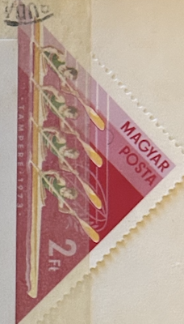
| SOURCE | TITLE| IMAGE MATCH | click to source page |
| Does anyone know something about this imperforate 5 Franc Belgisk Congo? | 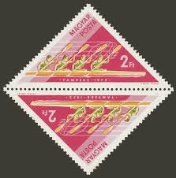 | |
| Shutterstock | Dzerzhinsk Russia February 11 2016 Postage Stock Photo 382231114 | Shutterstock | 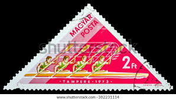 |
| Etsy | Magyar Posta Stamp | Linocut Print | Stamp Art | Hand Printed - Etsy Canada | 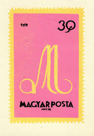 |
| Alamy | Postal stamp hi-res stock photography and images - Page 2 - Alamy |  |
| NASASpaceFlight.com - | Space Stamps | 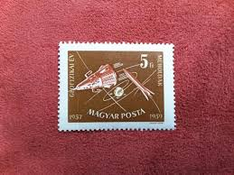 |
| eBay | Hungary 1965 Stamp Day B254-57 Full Sheet of 20 | eBay | 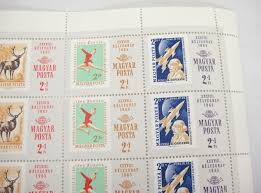 |
| Dreamstime.com | An Old Postage Stamp from Hungary 1947 Shows Postal Savings Bank Editorial Stock Image - Image of philately, historic: 191424134 | 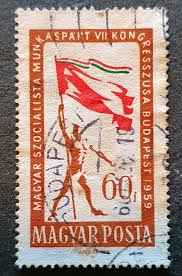 |
| eBay | Hungary World Traid Arganization symbol stamp 1969 | eBay | 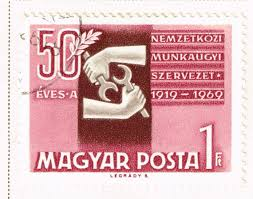 |
| eBay UK | HUNGARY - 1959. Seventh Socialist Workers' Party - MNH | eBay UK | 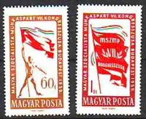 |
| Mark C. Grove | 1418:: Stamps, Hungary, 1952, 20, animals, birds, shore birds, triangle stamp, cancelled, ScC98-06 - Mark C. Grove | 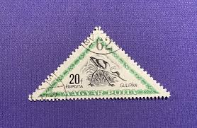 |
| Alamy | World war 2 poster hi-res stock photography and images - Alamy | 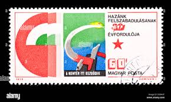 |
| Alamy | The year 1965 hi-res stock photography and images - Alamy | 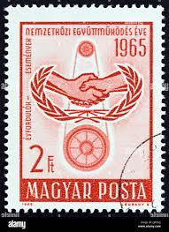 |
| eBay | HUNGARY - 1959. Congress of the Hungarian Socialist Workers' Party MNH!1640-1641 | eBay | 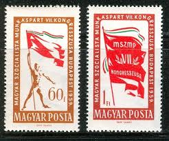 |
| Shutterstock | Karnal Haryana India -august 5th 2025-closeup Stock Photo 2670796261 | Shutterstock | 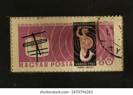 |
| eBay | Hungary Communist Youths scenes stamps set 1954 A-14 | eBay | 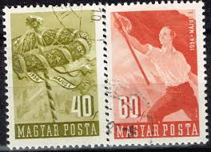 |
| The Philately | Hungary 1962 Mi 1817A Ferenc Berkes Sc 1435 for sale at The Philately | 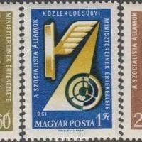 |
| eBay | HUNGARY 1959 Music Haydn Sc 1260 complete mint never hinged | eBay | 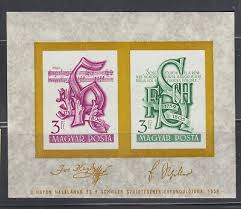 |
| Etsy | Hungary Stamp Set 1963 Large Places Famous People Events - Etsy New Zealand | 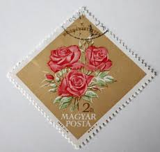 |
| eBay | Hungary K10 used 1975 4v Emblem Map Music | eBay | 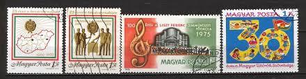 |
| eBay | Ungarn - Tag der Briefmarke Viererstreifen postfrisch 1965 Mi. 2175-2178 | eBay | 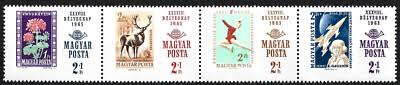 |
| eBay | Hungary 0270 used 1962 4v Flowers ROSES Industry Traktor Plane Tower | eBay | 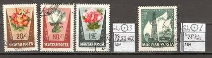 |
| efilatelija.lt | Faroe Islands stamps (1991) for sale. Paintings | 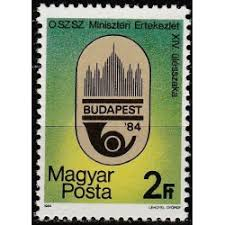 |
| Etsy | Hungary Stamp Set 1963 Large Places Famous People Events - Etsy | 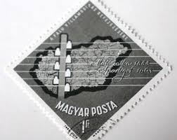 |
| buyhungarianstamps.com | 3597-3598 Hungary - 1998 Easter (MNH) – Eastern Europe Postage Stamps | Hungaria Stamp Exchange | 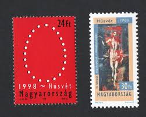 |
| eBay | HUNGARY-1959. Composer Haydn and Poet Schiller Souvenir Sheet MNH!!! Mi:Bl.29. | eBay | 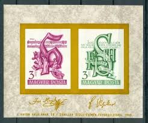 |
| eBay | F-EX44940 HUNGARY MNH 1965 ANTELOPE GYMNASTICS COSMOS SPACE FLOWER FLORES. | eBay | 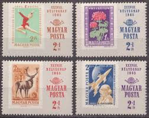 |
| eBay | Hungary 1964 IMPERVED sheet Space/Birds/IMEX stamp (Michel Block 42 B) nice MNH | eBay | 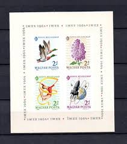 |
| eBay | Stamps Hungary 1961 Mi 1783A-1786A Sheetlet (complete issue) unmounted (10527263 | eBay | 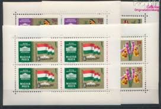 |
| eBay | HUNGARY 1978 SC B319 SZOCFLEX '78 SZOMBATHELY 3fo+1.50fo + LBL (3) MNH OG VF | eBay | 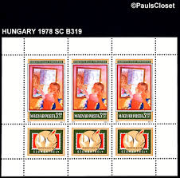 |
| eBay | JUG025 Jugoslavia 1975 MNH 1 m/s monument | eBay | 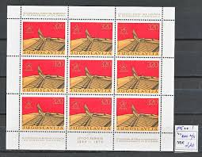 |
| eBay | HUNGARY 1964 SPACE Cosmos 3 STAMP SHOW MALLARD DUCKS Gymnastics LILACS Strip | eBay | 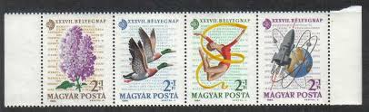 |
| eBay | Hungary Set & S/S 150th Ann Death Joseph Haydn & 200th Birthday Friedrich von Sc | eBay | 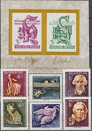 |
| Freestampcatalogue.com | Stamps from Hungary - Freestampcatalogue.com - The free online stampcatalogue with over 500.000 stamps listed. | 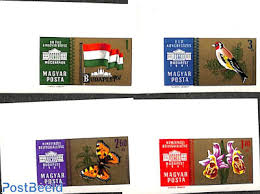 |
| eBay | Hungary 1978 MNH Mi 3273 Sc B318 Hungarian Communist Youth Movement ** | eBay | 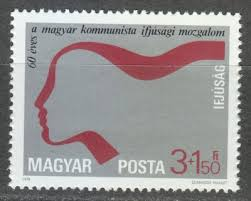 |
| postbeeld.com | Stamp 1971, Hungary BUDAPEST 71 s/s imperforated, 1971 - Collecting Stamps - PostBeeld - Online Stamp Shop - Collecting | 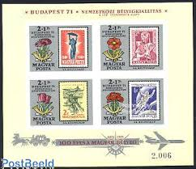 |
| eBay | Hungary 2000. Hungarian Millenium II. set MNH (**) Michel: 4579-4580 | eBay | 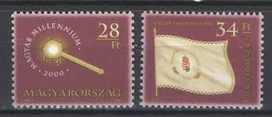 |
| eBay | Hungary 1959 Mini Sheet Music MNH 16438 | eBay | 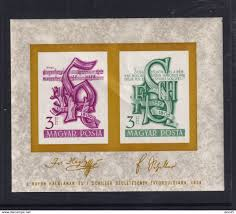 |
| eBay | HUNGARY UNGARN 1964 Block 42 B B242b IMPERF Stamp Day Gymnastics Space Flowers** | eBay | 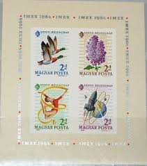 |
| eBay | Hungary Communist Party Flag stamp 1959 A-14 | eBay | 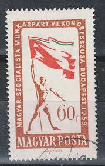 |
| eBay | Hungary Aviation Aircrafts Maps set 1977 HU | eBay | 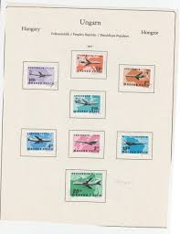 |
| eBay | 37138) CZECHOSLOVAKIA 1965 MNH** Spartacist games 4v | eBay | 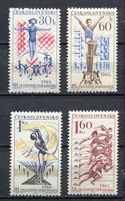 |
| eBay | Magyar bèlyeg,magyar millennium 2000 postatiszta 75. | eBay | 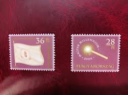 |
| eBay | HUNGARY . 1967 Hungarian Postal Anniv. Sheet (1862) . Mint Never Hinged | eBay | 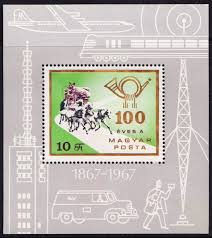 |
| eBay | Hungary 1978. Paintings Sozfilex used sheet Mi.: 3274 klb. / 5 EUR | eBay | 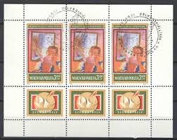 |
| eBay | Hungary 1961. Ministerconference, Warsaw set MNH (**) Michel: 1762-1764 | eBay | 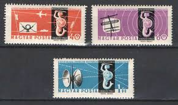 |
| eBay | Hungary 1964. Stampday sheet animals flowers MNH (**) Mi.: Block 42. / 5.50 EUR | eBay | 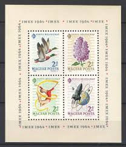 |
| Etsy | Vintage 1962 Hungary Auto Motorsport Race Used Postage Stamp - Etsy Canada | 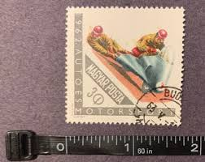 |
| eBay | 90070] Hungary 1965 Space travel Flowers Figure skating Deer Sheet MNH | eBay | 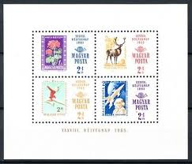 |
| eBay | HUNGARY 1967 SC 1862 19th CENTURY MAIL COACH & POST HORN 10fo S/S MNH OG VF | eBay | 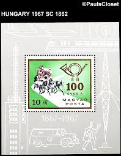 |
| eBay | Ungarn - Tag der Briefmarke Satz postfrisch 1992 Mi. 4210-4211 | eBay | 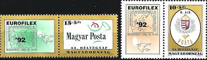 |
| eBay | Hungary S/S 100th Ann Autonomous Postal Services 1967 MNH-8 Euro | eBay | |
| vividagallery.com | Telecommunications Operator Budapest Zip Pouch by Vivida Gallery - Vivida Gallery | |
| eBay | HUNGARY: 1988 Mi: HU-BL-197A "Stamp Exhibition" MNH Sheet | eBay | |
| eBay | Magyar Posta Foreign 9 Various Stamps Used - #A39 | eBay | |
| eBay | Hungary 1959 Sc 1230 Imperf MNH Haydn & Schiller Monograms 9980 | eBay | |
| eBay | Hungary #Mi1577A-Mi1577B Mint 1959 Vanguard Sputnik #SPC1-024 | eBay | |
| eBay | Hungary 1958. Stampday set in strip MNH (**) Mi.: 1553-1554 | eBay | |
| eBay | Hungary 1978 MNH Mi 3274Zf Sc B319 Generations, by Gyula Derkovits.Szocfilex '78 | eBay |  |
| eBay | Hungary 150th anniversary of the birth of A.S. Pushkin 1949 | eBay | |
| Etsy | Hungary Stamps Magyar Posta 1960's Lot of 47 - Etsy UK |